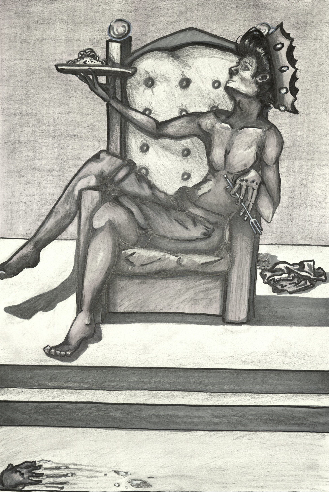
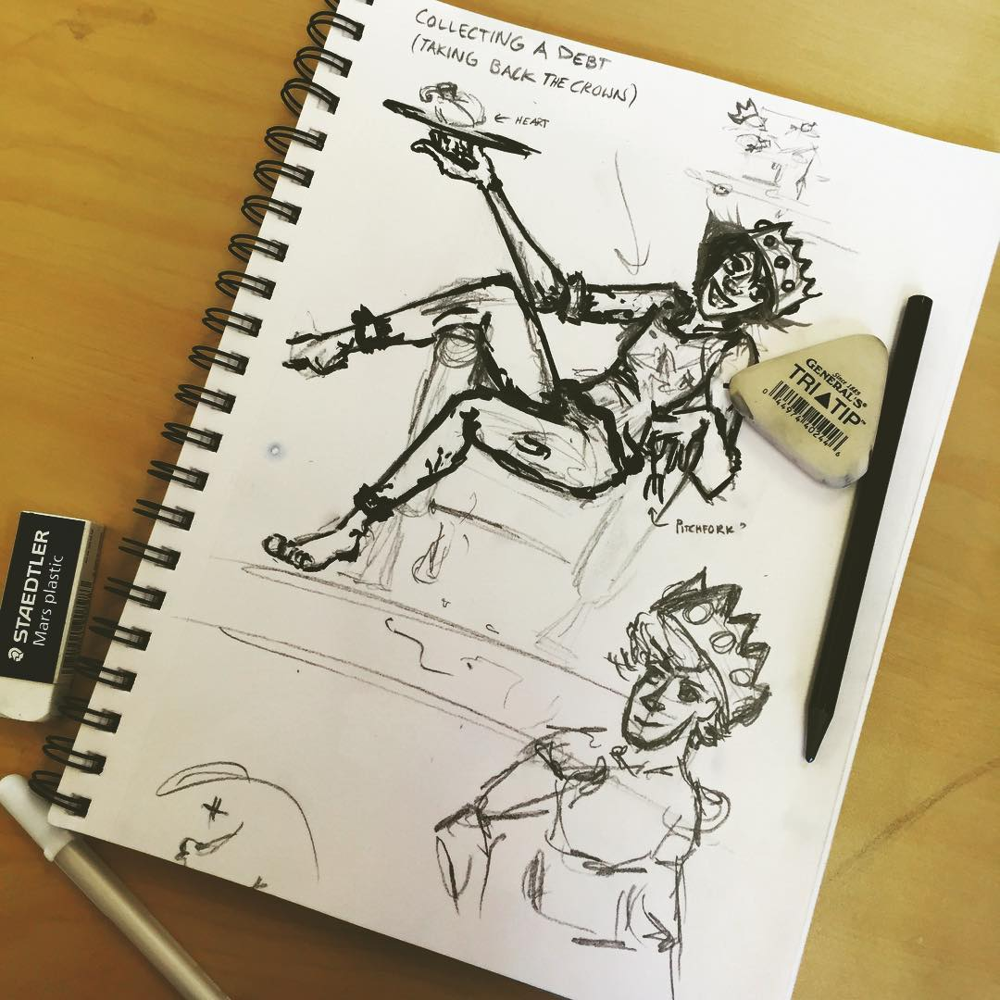
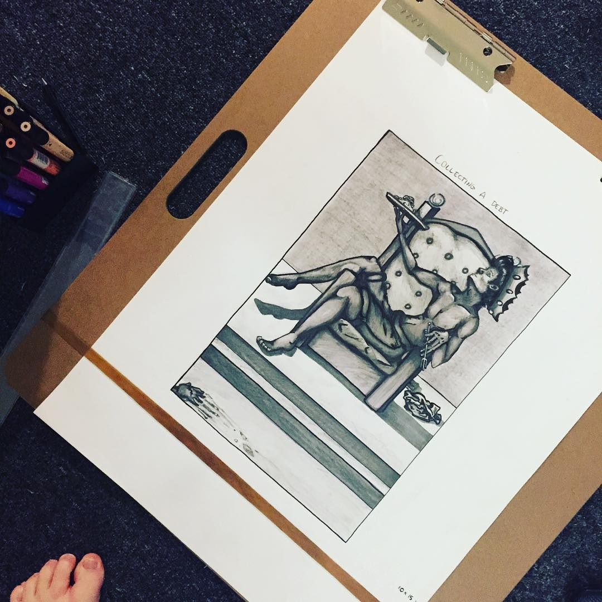

 

Taking Back the Crown
This piece was my first- ever assignment for my Comic Design class during the RISD pre- college course. The assignment given was "collecting a debt," from which I then created a character to exemplify taking back what they feel is owed.
I then gave this character a backstory to match. My final idea was "Taking Back the Crown," in essence a man who kills the king in order to take over the rule of his kingdom.
After many preliminary sketches, I decided I wanted a very relaxed and almost disrespectful pose, to push the idea that the character feels that they are owed what they have taken for themselves. In addition to this, I gave my character a heart on a plate to make the scene more shocking and grotesque upon closer inspection as well as to show the massacre the character presumably has left behind.
The final touches were the removal of his shirt to contonue the disrespectful theme, and (while I believe it to not be successful) the bloodied hand in the corner. Together I had hoped these elements would tell a cohesive story for my first- ever project.
Ultimatley I enjoyed how it came out. In the critique the feedback I got said that it clearly fit the prompt, but that some elements, such as the heart and the hand, were lost to poor execution but could have otherwise been very effective.
The instructions for this assignment forced me to work entireley in greyscale, so adding red to the heart or to emphasise blood wasn't an option at the time, so I agree with a lot of what was said. Aside from these faults (and a few other technical complaints), I'm impressed with myself mostly in how I was able to handle the prompt, since sometimes I can struggle with getting a strong idea initially. I'm also proud of the detail work on the character's hands, since that's an area I often struggle with.
The final note I'd like to make on this piece is probably just to add that this piece had a song to accompany it. It's titled "Emporer's New Clothes" by the band Panic! At the Disco and the line "I'm taking back the crown" was what gave me the inspiration for the character, scene, and mood within my piece.
So thanks Panic! At the Disco- you helped give me the inspiration to make pieces such as this.